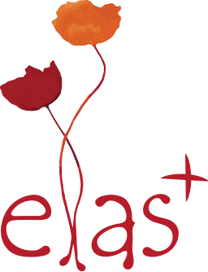
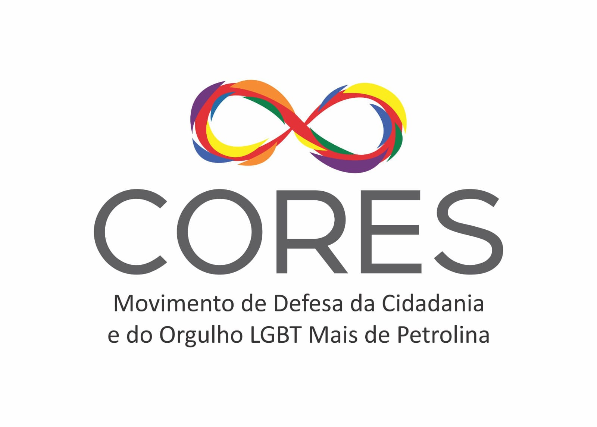

Rede LGBT:
É uma ONG que tem o intuito de fortalecer os coletivos do interior de Pernambuco.
Nasceu da necessidade de interiorizar as políticas LGBT no estado de Pernambuco.

elas+:
é uma ONG que arrecada fundos para o apoio coletivos
de mulheres, pessoas trans e lideranças feministas de todo o Brasil.

CORES:
O movimento CORES é ativo em prol da Defesa da Cidadania
e do Orgulho LGBTQIA+ de Petrolina

O Fórum de Mulheres de Pernambuco
O Fórum de Mulheres de Pernambuco (FMPE) é uma articulação feminista antirracista e anticapitalista de âmbito estadual,
fundada em 1988, que constrói nacionalmente a Articulação de Mulheres Brasileiras (AMB).

Articulação de Mulheres da Mata Sul
A Articulação de Mulheres da Mata Sul (AMMS) é uma rede de organizações e mulheres da região da Mata Sul de Pernambuco,
que se unem para promover a defesa dos direitos das mulheres, a violência e o empoderamento feminino.

Centro de Mulheres do Cabo
O CENTRO DAS MULHERES DO CABO é uma organização feminista, fundada em 1984 e constituída como entidade privada sem fins econômicos,
organizada como associação de mulheres, filiada a Associação Brasileira das ONGs – ABONG.
A Gestão do Centro é composta por um Conselho Diretor, um Conselho Fiscal e uma Coordenação Colegiada,
instâncias eleitas a cada 4 anos por Assembleia Geral das Associadas.

Movimento Leões do Norte
Atuamos na formação de lideranças LGBT, em ações de advocacy e no controle social das políticas públicas LGBT no estado de Pernambuco.

ABGLT
O Movimento LGBTQIA+ defende os direitos e a igualdade de pessoas lésbicas, gays, bissexuais,
transgêneros, queer, intersexuais, assexuais e outras identidades de gênero e orientações sexuais não heteronormativas.

IFPE
O Instituto Federal de Educação, Ciência e Tecnologia de Pernambuco, IFPE,
teve sua origem em 1909 quando o presidente Nilo Pessanha criou,,
em todas as capitais do Brasil, as Escolas de Aprendizes Artífices,
com o objetivo de oferecer cursos profissionalizantes gratuitos para estudantes com idade entre 10 e 13 anos.

ANTRA
A Associação Nacional de Travestis e Transexuais (ANTRA),
é uma rede nacional que articula em todo o Brasil 127 instituições que desenvolvem
ações para promoção da cidadania da população de Travestis e Transexuais.